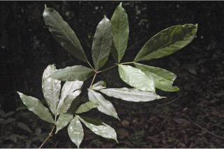
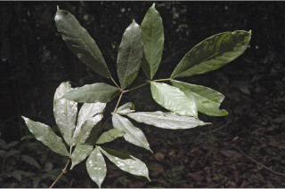
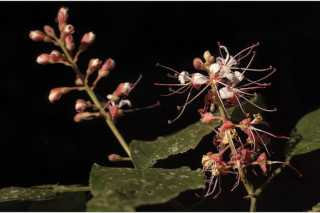
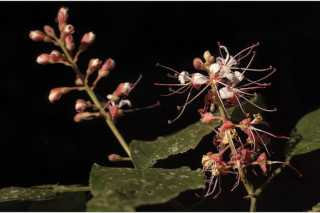

Small trees, up to 10 m tall.
10 ಮೀ. ಎತ್ತರದವರೆಗೆ ಬೆಳೆಯುವ ಸಣ್ಣಗಾತ್ರದ ಮರಗಳು.
10 മീറ്റര് വരെ ഉയരത്തില് വളരുന്ന ചെറുമരങ്ങള്.
சிறு மரம் 10 மீ. உயரம் வரை வளரக்கூடியது.
Branchlets terete, glabrous; young branchlets angular and hairy.
ಕಿರುಕೊಂಬೆಗಳು ದುಂಡಾಗಿದ್ದು ರೋಮರಹಿತವಾಗಿರುತ್ತವೆ; ಎಳೆಯ ಕಿರುಕೊಂಬೆಗಳು ಕೋನಯುಕ್ತವಾಗಿದ್ದು ರೋಮಸಹಿತವಾಗಿರುತ್ತವೆ.
ഉപശാഖകള് അരോമിലവും, ഉരുതും; ഇളംഉപശാഖകള് കോണോടുകൂടിയതും, രോമിലവുമാണ്.
சிறிய நுனிக்கிளைகள் குறுக்குவெட்டுத் தோற்றத்தில் வளையமானது, உரோமங்களற்றது; புதிய சிறிய நுனிக்கிளைகள், குறுக்குவெட்டுத் தோற்றத்தில் கோண விளிம்பு கொண்டது மற்றும் உரோமங்களுடையது.
Leaves compound, paripinnate, alternate, distichous, pulvinate; stipules in pairs, lanceolate with broad reniform foliaceous appendage at base; rachis short ca. 6 cm long, angular, obscurely winged; leaflets 2 pairs, subsessile, lower most pair just above the pulvine, lamina 8-26 x 2-8.3 cm, narrow elliptic to oblanceolate, apex bluntly cuspidate with mucronate tip, base asymmetric, subcoriaceous, glabrous; midrib impressed above; secondary_nerves strong ca.10 pairs; tertiary_nerves reticulate.
ಎಲೆಗಳು ಸಮಸಂಖ್ಯಾ ಗರಿರೂಪಿ ಸಂಯುಕ್ತ ಮಾದರಿಯಲ್ಲಿದ್ದು ಪರ್ಯಾಯ ಜೋಡನಾ ವ್ಯವಸ್ಥೆಯಲ್ಲಿದ್ದು ಕಾಂಡದ ಎರಡೂಕಡೆ ಎದರು-ಬದರಿನ ಲಂಬ ಸಾಲಿನಲ್ಲಿರುತ್ತವೆ; ಕಾವಿನೆಲೆಗಳು ಜೋಡಿಯಾಗಿದ್ದು, ಭರ್ಜಿಯ ಆಕಾರದಲ್ಲಿದ್ದು ಬುಡದಲ್ಲಿ ಮೂತ್ರಕೋಶ ಆಕಾರದ, ಎಲೆ ಪತ್ರವನ್ನು ಹೋಲುವ ಉಪಾಂಗ ಸಮೇತವಾಗಿರುತ್ತವೆ; ಅಕ್ಷದಿಂಡು ಅಂದಾಜು 6 ಸೆ.ಮಿ. ಉದ್ದವಿದ್ದು, ಕೋನಯುಕ್ತವಾಗಿದ್ದು ಅಸ್ಪಷ್ಟ ರೆಕ್ಕೆ ಸಮೇತವಾಗಿರುತ್ತವೆ; ಕಿರು ಎಲೆಗಳು 2 ಜೋಡಿಗಳಿದ್ದು ಸೂಕ್ಷ್ಮವಾದ ತೊಟ್ಟು ಸಮೇತವಿರುತ್ತವೆ, ತೀರಾ ಕೆಳ ಪಂಕ್ತಿಯಲ್ಲಿನ ಜೋಡಿ ಕಿರು ಎಲೆಗಳು ಉಬ್ಬಿದ ಎಲೆಭಾಗದ ತುಸು ಮೇಲಿರುತ್ತದೆ, ಪತ್ರಗಳು 8 - 26 x 2 - 8.3 ಸೆ.ಮೀ. ಗಾತ್ರ ಹೊಂದಿರುತ್ತವೆ ಮತ್ತು ಇಕ್ಕಟ್ಟಾದ ಅಂಡವೃತ್ತಾಕೃತಿಯಿಂದ ಹಿಡಿದು ಬುಗುರಿ-ಭರ್ಜಿ ಸಮ್ಮಿಶ್ರಾಕಾರದವರೆಗಿನ ಆಕಾರವನ್ನು ಹೊಂದಿರುತ್ತಬೆ. ಪತ್ರದ ತುದಿ ಮೊಂಡವಾದ, ಕಮಾನು ರೀತಿಯ ತುದಿಯನ್ನು ಹೊಂದಿದ್ದು ಅಗ್ರಭಾಗದಲ್ಲಿ ಸೂಕ್ಷ್ಮವಾದ ಮೊನಚು ಮುಳ್ಳನ್ನು ಹೊಂದಿರುತ್ತದೆ; ಪತ್ರದ ಬುಡಭಾಗ ಅಸಮ್ಮಿಯಾಗಿರುತ್ತದೆ; ಪತ್ರಗಳು ಉಪತೊಗಲನ್ನೋಲುವಂತಿದ್ದು ರೋಮರಹಿತವಾಗಿರುತ್ತದೆ; ಮಧ್ಯನಾಳ ಪತ್ರದ ಮೇಲ್ಭಾಗದಲ್ಲಿ ಅಚ್ಚೊತ್ತಿದಂತಿರುತ್ತದೆ; ಎರಡನೇ ದರ್ಜೆಯ ನಾಳಗಳು ಧೃಢವಾಗಿದ್ದು ಅಂದಾಜು 10 ಜೋಡಿಗಳಿರುತ್ತವೆ; ಮೂರನೇ ದರ್ಜೆಯ ನಾಳಗಳು ಜಾಲಬಂಧ ನಾಳ ವಿನ್ಯಾಸದವು.
തിന്റെ രുഭാഗത്ത് മാത്രമായി, ഏകാന്തരക്രമത്തില്, അടുക്കിയ സമപിച്ഛക പത്രവൃന്തതല്പത്തോടു കൂടിയ ബഹുപത്രങ്ങള്; കീഴ്ഭാഗത്ത് വൃത്താകാരത്തിലുള്ള പത്രതുല്യമായ അംഗത്തോടുകൂടിയ,, കുന്താകാരത്തിലുള്ള അനുപര്ണ്ണങ്ങള് ജോഡികളായി കാണപ്പെടുന്നു; ബഹുപത്രാക്ഷം ചെറുതും, ഏതാ് 6 സെ.മി. നീളമുള്ളതും, കോണോടുകൂടിയതും, അസ്പഷ്ടമായി ചിറകോടുകൂടിയതുമാണ്; പത്രകങ്ങള് 2 ജോഡി, അവൃന്തമാണ്, ഏറ്റവും കീഴെയുള്ള ജോഡി പത്രവൃന്തതല്പത്തിന് തൊട്ടുമുകളിലാണ്, പത്രകഫലകത്തിന് 8 സെ.മി മുതല് 26 സെ.മി വരെ നീളവും,. 2 സെ.മി മുതല് 8.3 സെ.മി വരെ വീതിയും, വീതികുറഞ്ഞ ദീര്ഘവൃത്തീയം തൊട്ട് അപകുന്താകൃതിയുമാണ്, അറ്റത്തൊരു മുനപ്പോടുകൂടിയ പത്രാഗ്രം, പത്രാധാരം അസമമാണ്.
கூட்டிலைகள், இரட்டைபடை சிறகுவடிவக்கூட்டிலை (பேரிபின்னேட்), மாற்றுஅடுக்கமானவை, இருநெடுக்கு வரிசையிலையடுக்கம் (டைஸ்டிக்கஸ்), பல்வினேட்; ஒர் ஜோடி இலையடிச்செதில்களுடையது, ஈட்டி வடிவம் மற்றும் படர்ந்த கிட்னி வடிவ இலைபோன்ற செதில்; ரேக்கிஸ் 6 செ.மீ. நீளமானது, கோணவடிவானது, சிறிய இறகு போன்று அமைப்புடையது; சிற்றிலை 2 ஜோடிகள், மிகச்சிறிய காம்புடையது, இலை அலகு 8-26 X 2-8.3 செ.மீ. குறுகிய நீள்வட்டம் முதல் தலைகீழ் ஈட்டி வடிவம், அலகின் நுனி சிறிய வால் போன்ற அதிக்கூரியது மற்றும் சிறிது துருத்திய முனையுடையது (மூயூக்கரனேட்), அலகின் தளம் சமமற்றது, சப்கோரியேசியஸ் உரோமங்களற்றது; மையநரம்பு மேற்பரப்பில் பள்ளமானது; இரண்டாம் நிலை நரம்புகள் சுமாராக 10 ஜோடிகள்; மூன்றாம் நிலை நரம்புகள் வலைப்பின்னல் அமைப்பு கொண்டது.
Inflorescence axillary racemes; flowers with white petals and rosy pink sepals.
ಪುಷ್ಪಮಂಜರಿ ಅಕ್ಷಾಕಂಕುಳಿನಲ್ಲಿರುವ ಮಧ್ಯಾಭಿಸರ ಪುಷ್ಪಮಂಜರಿ ಮಾದರಿಯವು; ಹೂಗಳು ಶ್ವೇತ ವರ್ಣದ ಪುಷ್ಪದಳಗಳನ್ನೂ ಗುಲಾಬಿ ಮಿಶ್ರಿತ ನಸುಗೆಂಪು ಬಣ್ಣದ ಪುಷ್ಪ ಪತ್ರಕಗಳನ್ನು ಹೊಂದಿರುತ್ತವೆ.
ഉപചര്മ്മില പ്രകൃതം, അരോമിലം; മുഖ്യസിര മുകളില് വ്യക്തമാണ്; ഏതാ് 10 ജോഡി ദൃഢമായ, ദ്വിതീയ ഞരമ്പുകള്; ജാലിതമായ ത്രിതീയ ഞരമ്പുകള്.
மஞ்சரி தண்டின் இலைக்கோணங்களில் அமைந்த ரெசீம்; மலர்கள் வெள்ளை நிறமான புல்லி இதழ் மற்றும் அல்லி இதழ் இளஞ்சிவப்பு நிறமானது.
Pod to 7 x 3 cm, flat, twisted when dry; seeds flat, rounded.
ಪಾಡುಗಳು 7x3 ಸೆ.ಮೀ.ವರೆಗಿನ ಗಾತ್ರ ಹೊಂದಿದ್ದು ಚಪ್ಪಟೆಯಾಗಿರುತ್ತದೆ ಹಾಗೂ ಒಣಗಿದಾಗ ತಿರುಚಿಕೊಂಡಿರುತ್ತವೆ; ಬೀಜಗಳು ಚಪ್ಪಟೆಯಾಗಿದ್ದು, ಗುಂಡಾಕಾರವಾಗಿರುತ್ತವೆ.
പൂങ്കുലകള് കക്ഷീയ റസീമുകളാണ്; വെളുത്ത ദളങ്ങളും റോസ്-പിങ്ക് നിറത്തിലുള്ള വിദളങ്ങളുമുള്ള പൂക്കള്.
பாட் கனி (அவரைப்போன்றது), 7 X 3 செ.மீ. நீளமானது, தட்டையானது, உலரும் போது திருகியது; விதைகள் தட்டையானது, உருண்டையானது.
 



 
